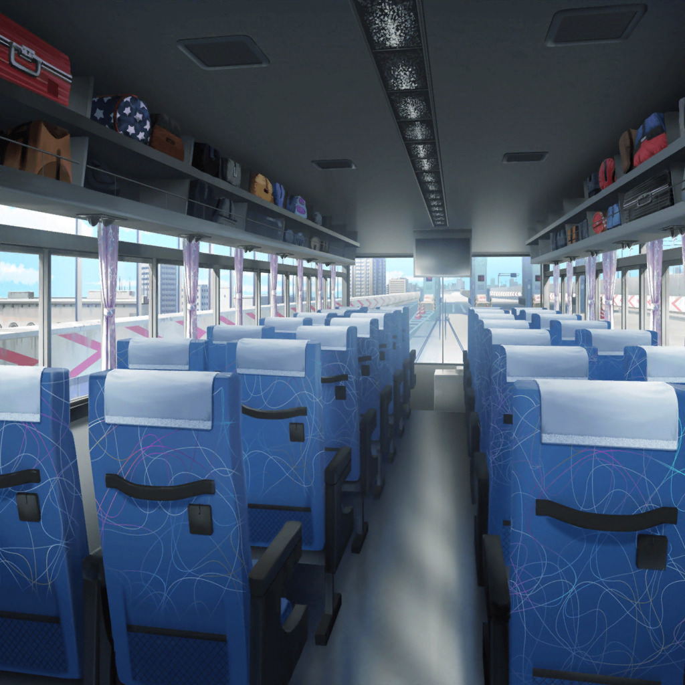

駅前
美咲
はあ……スノボとか行くのいつぶりだっけ。
ま、行くって決めた以上は楽しもう。
……あのメンバーで普通に遊べるかはわかんないけど
はぐみ
みーくんっ！ おっはよー！
美咲
あ、はいはい。おはよう。今日も元気だね
はぐみ
当然だよっ！
だってこれから雪がたっくさんあるところに行くんだよ？
美咲
その理由で元気になるの、
なんかもういろいろ通り越して羨ましいよ
あこ
あ、二人ともおっはよー！
はぐみ
あこちん、おっはーっ！
あこ
ふっふっふ……
いよいよ白銀の龍と闇の眷属との……
えーっと……コラボが……
はぐみ
へ？ なにそれ、どういう意味？
日菜
あ！ おーい、みんなー！
はぐみ
あ！ 日菜ちゃん来たっ！
麻弥
皆さん、おはようございます！
美咲
え、大和さん！？
麻弥
奥沢さん！ どうもです！
あこ
まやさんがひなちんの連れてきたい人だったんだね！
日菜
そーだよ！
麻弥ちゃん、この前の収録でトチったときに、すっごい顔で
『どこか遠くへ行きたい……』って言ってたから！
美咲
あー、それ絶対に日菜さんが考えているような
意味じゃないと思います……
麻弥
えっと……ちょっと話が見えないんですけど、
今日、ジブンはどうして呼ばれたんでしょうか？
美咲
え……？ 日菜さんから何も聞いてないんですか？
麻弥
……へ？ ジブンは昨日……
 スタジオ
スタジオ
麻弥
あれ、電話だ。……え、日菜さん？
麻弥
はい、大和ですが。
今日はどうしたんですか？
日菜
あ、もしもし？ 明日の朝７時に、駅前のバス広場に集合ね！
遅れないでねー！
麻弥
え！？ あの……！
麻弥
……切れてる
駅前
麻弥
という感じで、とりあえず来ただけなので、
何が何だかよくわかってないんですが……
美咲
……日菜さんっぽい。
ていうか、それでよく来てくれましたね……
はぐみ
あ、見て見て！ バス来たよー！
あこ
ほんとだっ！ とりあえず、乗ってからお話しよーよ！
日菜
そーだね！ そうしよっか！
麻弥
えっ、高速バス……？ これはどういう……
美咲
大和さん、今は諦めて乗りましょう
麻弥
……？

高速バス 車内
麻弥
ええ！？ スキー？ スノボ？
ジブン……そういうのは大の苦手で……
あこ
ええ！？ そうなの！？
麻弥
はい……なので、
ゲレンデの端っこで雪だるまでも作っていますから、
みなさん楽しんでいただければと……
美咲
ちょ……ちょっと待って大和さん。
大丈夫ですよ。
やったことなくてもあたしとかはぐみが教えますから
はぐみ
うんっ！ はぐみにまかせて！
麻弥
いえ……でもそれではみなさんが楽しめなくて、
迷惑になりますし……
美咲
そんなことないですよ！
むしろ居てくれないと、この３人を
あたしが１人でなんとかしなくちゃいけないんで……！
日菜
へ？ 美咲ちゃん、なんか言ったー？
美咲
いえいえいえ！ 何も、何も言ってません
麻弥
うーん……ですが、やっぱりジブンとしては、
みなさんに迷惑をかけたくないですし……
美咲
本当に気にしなくて大丈夫ですから……！
お願いだから一緒に居てください、お願いだから！
はぐみ
あはは！ みーくん、
そんなに麻弥さんのこと好きだったんだねっ！
あこ
あの、っていうか、いきなりスキーとかしなくても、
ゲレンデには雪遊び広場とかもあるし、
まずはみんなで雪に慣れればいいと思う！
麻弥
え……？ そんな場所があるんですか？
日菜
あ、ホントだ。パンフレットに書いてあるー！
麻弥
おお……それならジブンも楽しめそうです！
はぐみ
よーし！ じゃあ着いたら、みんなで雪だるま作ろうよ！
美咲
はぐみ、それすっごくいい！
珍しくナイスアイディア！
日菜
いいねー！ あたしも作りたーい！
あこ
さんせー！
麻弥
みなさん……ありがとうございます！
麻弥
ジブンも雪だるまを作るのならお役に立てると思います！
せ、精一杯がんばります！